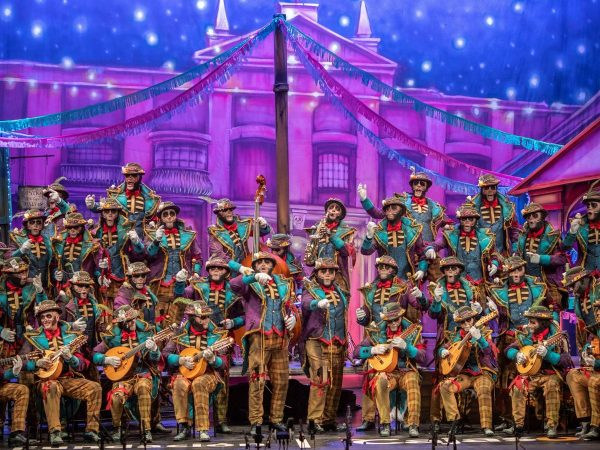
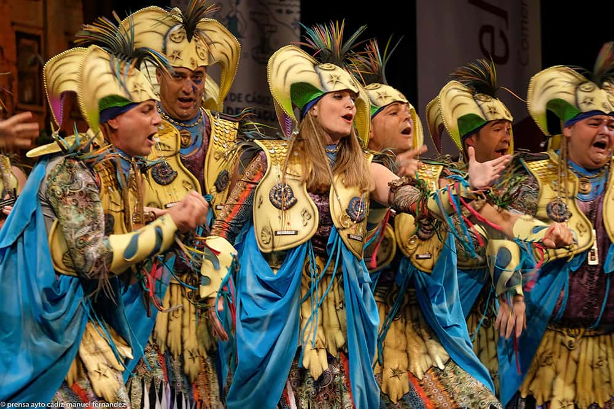
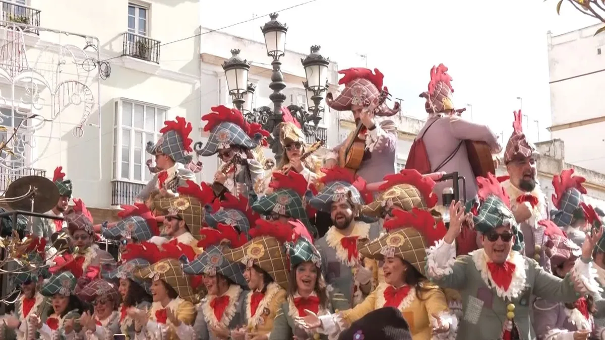
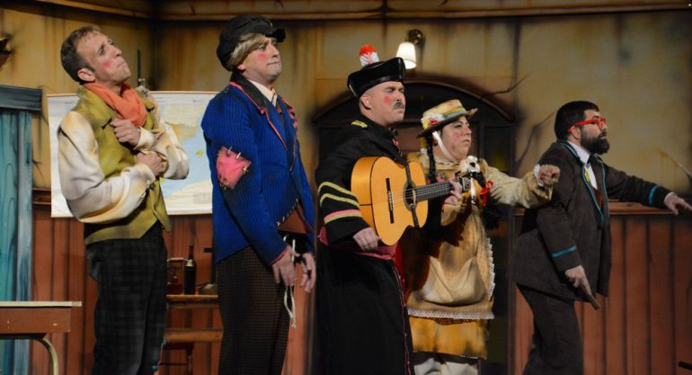

Una chirigota es una agrupación del Carnaval de Cádiz que canta canciones humorísticas y críticas, con letras graciosas sobre temas de actualidad, usando disfraces y mucho ingenio.

Una comparsa es una agrupación del Carnaval de Cádiz que interpreta coplas con letras más serias y poéticas, centradas en la crítica social, los sentimientos y la reivindicación, acompañadas de música cuidada y disfraces acordes al tema.

Un coro es una agrupación del Carnaval de Cádiz formada por muchas personas que interpretan principalmente tangos, con letras festivas y críticas, y que suelen actuar en carruseles por las calles durante el carnaval.

Un cuarteto es una agrupación del Carnaval de Cádiz formada por pocas personas que combina teatro, humor y música, destacando por sus diálogos cómicos y situaciones divertidas más que por el canto